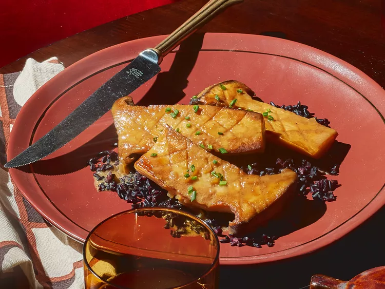
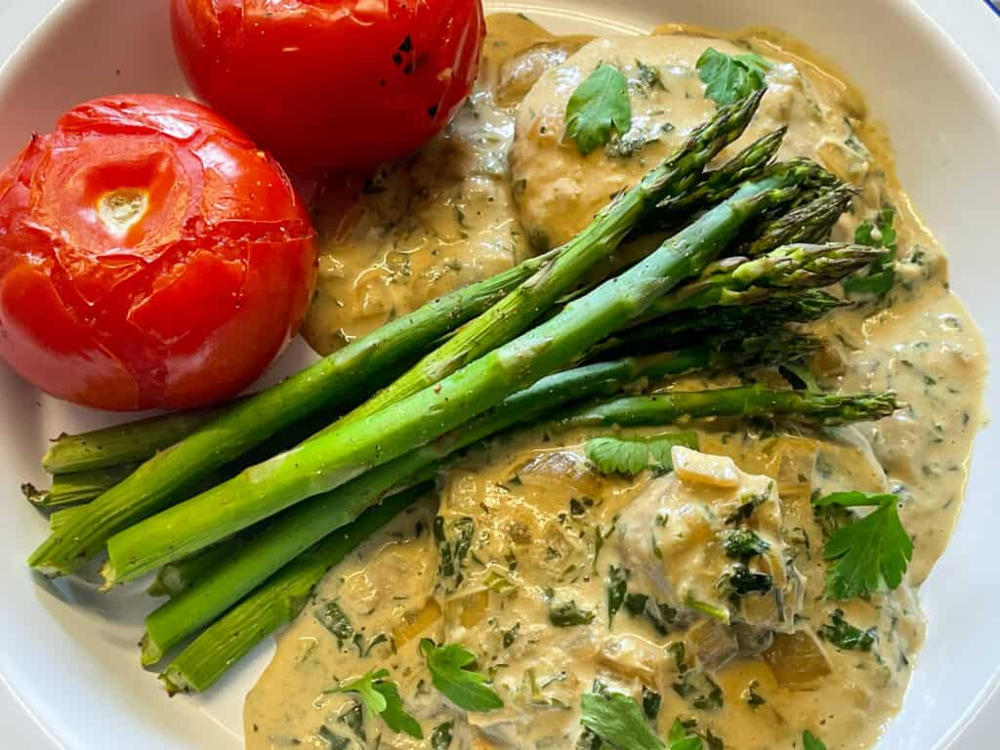
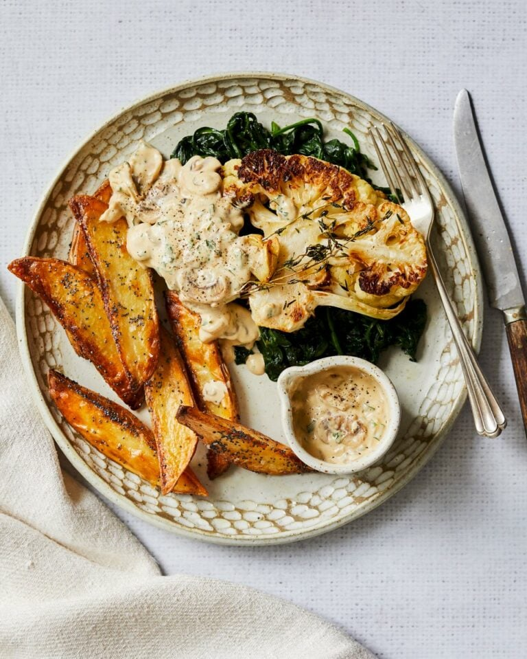
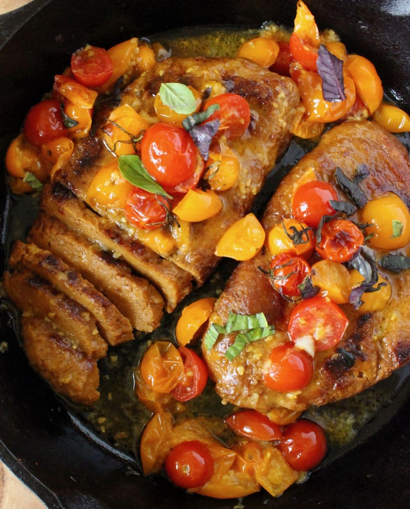

<html></html>
<head>
    <title>recipe</title>
    <meta name="viewport" content="width=device-width, initial-scale=1">
    <link rel="stylesheet" href="recipesty.css">
    <link rel="stylesheet" href="https://fonts.googleapis.com/css?family=Zain|ABeeZee|Inter">
</head>
<body>
    <div class="header">
        <h1>Flavor Fusion</h1>
    </div>
    <div class="navbar">
        <ul>
            <li><a href="frontpage.html">Home</a></li>
            <li><a href="category1.html">Appetizers</a></li>
            <li><a href="category2.html">Main Courses</a></li>
            <li><a href="category3.html">Desserts</a></li>
        </ul>
    </div>
    <div class="name">
        <p style="font-size: 250%;">Mushroom Steak Diane</p>
    </div>

    <div class="scrolling-gallery">
        
        
        
        
    </div>

    <div class="desc">
        <div class="descinfo">
            <p>
                <p><span class="dietlabels vegetarian">Vegetarian</span> <span class="dietlabels vegan">Vegan</span></p>
                The traditionally meat-centric dish gets a vegan makeover courtesy of king trumpet mushrooms. Miso, soy sauce, and coconut milk add cooked-all-day depth of flavor in minutes.

            </p>
        </div>

        <div class="time">
            
            <br> Total Time: 25 min
        </div>

        <div class="flip-card">
            <div class="flip-card-inner">
              <div class="flip-card-front">
                
                <br>
                Nutritional information
              </div>
              <div class="flip-card-back">
                <p>
                    serving size:  of 2<br>
                    calories: 422<br>
                    total fat: 19g<br>
                    carbs: 44g<br>
                    sugar: 11g<br>
                    protein: 17g<br>
                    cholesterol: omg<br>
                    sodium: 656mg<br>
                </p>
              </div>
            </div>
          </div>
        
    </div>

    <div class="bottom">
        <div class="ingredients">
            <h2 style="text-align: center;">Ingredients</h2>
            <hr class="divider" style="width: 70%">
            <div class="checkbox">
                <form>

                    <p>
                        <input type="checkbox" name="ingredients" class="strikethrough">
                        <label>1/2 cup low-sodium vegetable broth<br></label>
                    </p>

		    <p>
                        <input type="checkbox" name="ingredients" class="strikethrough">
                        <label>2 tablespoons reduced sodium soy sauce<br></label>
                    </p>

		    <p>
                        <input type="checkbox" name="ingredients" class="strikethrough">
                        <label>2 teaspoons Chinese mustard or Dijon mustard<br></label>
                    </p>

		    <p>
                        <input type="checkbox" name="ingredients" class="strikethrough">
                        <label>2 teaspoons white miso paste<br></label>
                    </p>

		    <p>
                        <input type="checkbox" name="ingredients" class="strikethrough">
                        <label>1 pinch crushed red pepper<br></label>
                    </p>

		    <p>
                        <input type="checkbox" name="ingredients" class="strikethrough">
                        <label>3 large king trumpet mushrooms (about 1 pound)<br></label>
                    </p>

		    <p>
                        <input type="checkbox" name="ingredients" class="strikethrough">
                        <label>2 tablespoons vegetable oil<br></label>
                    </p>

		    <p>
                        <input type="checkbox" name="ingredients" class="strikethrough">
                        <label>1 teaspoon vegetable oil<br></label>
                    </p>

		    <p>
                        <input type="checkbox" name="ingredients" class="strikethrough">
                        <label>1 shallot, minced<br></label>
                    </p>

		    <p>
                        <input type="checkbox" name="ingredients" class="strikethrough">
                        <label>1/4 cup sake<br></label>
                    </p>
		    <p>
                        <input type="checkbox" name="ingredients" class="strikethrough">
                        <label>cooked black lentils, for serving<br></label>
                    </p>
		    <p>
                        <input type="checkbox" name="ingredients" class="strikethrough">
                        <label>2 teaspoons sliced chives or green onions<br></label>
                    </p>

                    
                </form>
             </div>
        </div>        

        <div class="instructions">
            <h2 style="text-align: center;">Instructions</h2>
            <hr class="divider">
            <div class="steps">
                <ol type="1">
                    <li>Stir together broth, soy sauce, mustard, miso paste, and red pepper in a small bowl.</li><br>
	<li>Cut mushrooms in half lengthwise. Score the inside of each mushroom half with shallow diagonal cuts (do not cut all the way through).</li><br>
	<li>Heat 2 tablespoons oil in a large cast-iron or nonstick skillet over high heat, swirling to coat bottom. Cook mushrooms, cut sides down, until bottoms are golden brown, 3 to 5 minutes (do not stir). Reduce heat to medium. Pour half of broth mixture (about 1/3 cup) into skillet. Cook, covered, until liquid is mostly absorbed and mushrooms are fork-tender, about 5 minutes. (Add water as needed, 2 tablespoons at a time, if liquid evaporates and mushrooms are not yet tender.) Transfer mushrooms to a bowl.</li><br>
	<li>Add remaining 1 teaspoon oil and the shallot to skillet. Cook, stirring constantly, over medium heat 30 seconds. Add sake; bring to a boil over high heat. Cook, stirring frequently, until slightly reduced, about 1 minute. Add coconut milk, remaining broth mixture, and any accumulated juices from mushrooms. Cook over high heat just until sauce starts to thicken, about 2 minutes. </li><br>
	<li>Return mushrooms to skillet. Reduce heat to low. Gently simmer until mushrooms are heated through, adding water as needed, 1 tablespoon at a time, until sauce reaches desired consistency, about 2 minutes. </li><br>
	<li>Serve mushrooms over lentils and top with sauce and chives.</li><br>
                </ol>
            </div>
        </div>
    </div>
</body>
</html>